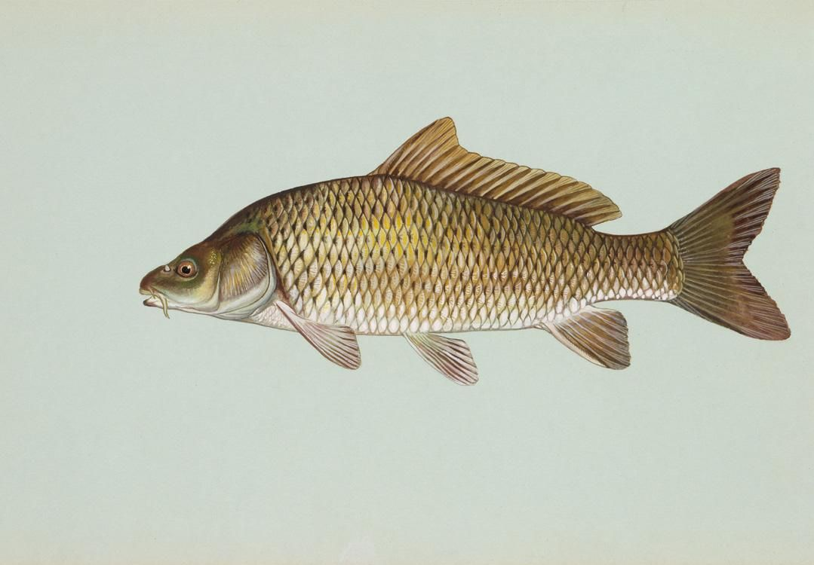

Kalaa kannattaa syödä
Kala on mainio proteiinin lähde ja lisäksi se sisältää runsaasti myös terveeellistä, monityydyttämättömiä rasvojasekä D-vitamiinia. Näiden hyvien ominaisuuksien lisäksi kala on myös hyvä kuidun lähde.
Ekologisuus
Ruoan monipuolisuus makuelämykset, ympäristömyrkkyaltistuksen pinentäminen ja sesonkitarjousten hyödyntäminen ovat jo oikein hyviä syitä syödä kalaa lajeja vaihdellen. Kuitenkin yksi tärkeimmistä perusteluista on ekologisuus ja vastuullisuus, sillä maailman kalakannoista jo kolmasosa on joko romahtaneita, ylikalastettuja tai toipumassa romahduksesta. Kuluttajavoi omalta osaltaan pienentää suositumpiin lajeihin kohdistuvia pyyntipaineita valitsemallaostokoriinsa vähemmän hyödynnettyjä ruokakaloja. Kalansyönnin ympäristönäkökulmaa pohdimme jo aiemmin todetessamme, että järvikalan syöminen on ympäristöteko.
Hyviä kotimaisia kaloja
Rasvahappojen perusteella parhaat kalat ovat lohi, kirjolohi, siika ja silakka. Nämä kalalajit sisältävät runsaasti monityydyttämättömiä rasvahappoja. Lohen kohdalla kannattaa olla tarkkana, sillä vain ASC-sertifioitu ja luomumerkitty lohi ovat WWF:n vihreällä listalla. Kirjolohta ostaessa kannattaa suosia Suomessa verkkoaltaissa kasvatettua kalaa. Perämereltä ja Suomen sisävesistä pyydetty muikku on kannaltaan pääosinkestävlläpohjalla. Listalla olevista lajeista turska, made, ahven ja hauki sisältävät vähiten monityydyttmättömiä rasvahappoja.
Syö kaksi kertaa viikossa
Kala on ylivoimaisesti paras luonnolliinen D-vitamiinin lähde. Kalaa kannattaa syödä ainakin 2-3 kertaa viikosa, sillä kala muokkaa ruokavaliota terveelliseen suuntaan. Kun syöt kala-aterian kerran viikossa koululounaalla ja nautit toisen vapaa-ajalla, niin pääset jo tavoitteeseen. Syöd vaihdellen eri kalalajeja. Parhaalta kala maistuu, kun sen valitsee tuoreena ja sesonign mukaaan. Suomalaisen syömistä kaloista noin puolet on luonnonkalaa.
Lähde:syohyvin.fi
Ei ihan joka päivä näitä kaloja
Isokokoisia silakoita, sisävesien haukea tai itämerestä pyydettyä lohta suositellaan syötäväksi lapsille tai hedelmällisessä iässä oleville vain 1-2 kertaa kuukaudessa.